Data Source: Waste Disposal
In recent years climate change & global warming has gained significant momentum. The one key sources of CO2 emissions has been from countries. In this project the CO2 emissions from all over countries will be investigated.
import pandas as pd
import numpy as np
import matplotlib.pyplot as plt
import seaborn as sns
df = pd.read_csv('waste_disposal_data_11-29-2021.csv')
df.head()
Output :
Domain Code Domain Area Code (ISO3) Area Element Code Element Item Code Item Year Code Year Unit Value Flag Flag Description 0 GW Waste Disposal AFG Afghanistan 7273 Emissions (CO2) 6990 Incineration 1990 1990 kilotonnes 0.0 Fc Calculated data 1 GW Waste Disposal AFG Afghanistan 7273 Emissions (CO2) 6990 Incineration 1991 1991 kilotonnes 0.0 Fc Calculated data 2 GW Waste Disposal AFG Afghanistan 7273 Emissions (CO2) 6990 Incineration 1992 1992 kilotonnes 0.0 Fc Calculated data 3 GW Waste Disposal AFG Afghanistan 7273 Emissions (CO2) 6990 Incineration 1993 1993 kilotonnes 0.0 Fc Calculated data 4 GW Waste Disposal AFG Afghanistan 7273 Emissions (CO2) 6990 Incineration 1994 1994 kilotonnes 0.0 Fc Calculated data
Shape function tells us number of Observations and columns. In this dataset we have 14 columns and 46131 records or obervations
row, col=df.shape
print('Total number of observations/rows/entries:', row)
print('Total number of columns:', col)
Output :
Number of Rows = 6238
Number of Columns = 14
Extracting Basic Dataset Information:
- Our dataset contain
- RangeIndex: 0 - to - 6238
- Total Columns: 14
- No of Non-Null Values: Zero
- Dtypes: float64(1), int64(4), object(9)
- memory usage: 682.4+ KB
df.info()
Output :
<class 'pandas.core.frame.DataFrame'>
RangeIndex: 6238 entries, 0 to 6237
Data columns (total 14 columns):
# Column Non-Null Count Dtype
--- ------ -------------- -----
0 Domain Code 6238 non-null object
1 Domain 6238 non-null object
2 Area Code (ISO3) 6238 non-null object
3 Area 6238 non-null object
4 Element Code 6238 non-null int64
5 Element 6238 non-null object
6 Item Code 6238 non-null int64
7 Item 6238 non-null object
8 Year Code 6238 non-null int64
9 Year 6238 non-null int64
10 Unit 6238 non-null object
11 Value 6238 non-null float64
12 Flag 6238 non-null object
13 Flag Description 6238 non-null object
dtypes: float64(1), int64(4), object(9)
memory usage: 682.4+ KB
DataSet is cleaned as far as missing values are concerned
df.isnull().sum()
Output :
Domain Code 0
Domain 0
Area Code (ISO3) 0
Area 0
Element Code 0
Element 0
Item Code 0
Item 0
Year Code 0
Year 0
Unit 0
Value 0
Flag 0
Flag Description 0
dtype: int64
DataSet is cleaned as far as missing values are concerned in percentage
df.isnull().sum() / df.shape[0] * 100
Output :
Domain Code 0.0
Domain 0.0
Area Code (ISO3) 0.0
Area 0.0
Element Code 0.0
Element 0.0
Item Code 0.0
Item 0.0
Year Code 0.0
Year 0.0
Unit 0.0
Value 0.0
Flag 0.0
Flag Description 0.0
dtype: float64
df.describe()
Output :
Element Code Item Code Year Code Year Value count 6238.0 6238.0 6238.000000 6238.000000 6238.000000 mean 7273.0 6990.0 2004.677300 2004.677300 202.675467 std 0.0 0.0 8.603289 8.603289 1066.676986 min 7273.0 6990.0 1990.000000 1990.000000 0.000000 25% 7273.0 6990.0 1997.000000 1997.000000 0.000000 50% 7273.0 6990.0 2005.000000 2005.000000 0.652579 75% 7273.0 6990.0 2012.000000 2012.000000 30.517272 max 7273.0 6990.0 2019.000000 2019.000000 11151.696408
df.Value.value_counts()
Output :
0.000000 2828
17.356301 1
17.343147 1
17.324444 1
17.311169 1
...
47.010034 1
47.179100 1
47.292824 1
46.997779 1
35.841750 1
Name: Value, Length: 3411, dtype: int64
```python
# unique values in each column
df.nunique
> **Output :**
```python
Domain Code 1
Domain 1
Area Code (ISO3) 217
Area 217
Element Code 1
Element 1
Item Code 1
Item 1
Year Code 30
Year 30
Unit 1
Value 3411
Flag 2
Flag Description 2
dtype: int64
df.drop(['Domain Code', 'Domain', 'Element Code', 'Element', 'Item Code', 'Item', 'Unit','Flag','Flag Description'], axis=1, inplace=True)
There are some columns which are not in use but to get a really clear picture lets use those as well.
from sklearn.preprocessing import LabelEncoder
label = LabelEncoder()
df['Domain'] = label.fit_transform(df['Domain'])
df['Domain Code'] = label.fit_transform(df['Domain Code'])
df['Area Code (ISO3)'] = label.fit_transform(df['Area Code (ISO3)'])
df['Area'] = label.fit_transform(df['Area'])
df['Element'] = label.fit_transform(df['Element'])
df['Item'] = label.fit_transform(df['Item'])
df['Unit'] = label.fit_transform(df['Unit'])
df['Flag'] = label.fit_transform(df['Flag'])
df['Flag Description'] = label.fit_transform(df['Flag Description'])
The data is extremely broadly distributed with many values in the range of 0 to 8.415818 with a strong skew to the right and kurtosis as 0 to 75.170198.
def mod_outlier(df):
col_vals = df.columns
df1 = df.copy()
df = df._get_numeric_data()
q1 = df.quantile(0.25)
q3 = df.quantile(0.75)
iqr = q3 - q1
lower_bound = q1 - (1.5 * iqr)
upper_bound = q3 + (1.5 * iqr)
for col in col_vals:
for i in range(0, len(df[col])):
if df[col][i] < lower_bound[col]:
df[col][i] = lower_bound[col]
if df[col][i] > upper_bound[col]:
df[col][i] = upper_bound[col]
for col in col_vals:
df1[col] = df[col]
return(df1)
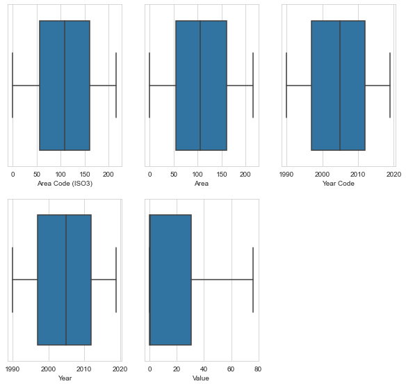
# Data Distribution by top 30 countries
a = df.groupby(["Area"]).sum().sort_values(
by=["Value"], ascending=False).head(30)
a
plt.figure(figsize=(5, 3), dpi=150, linewidth=2)
sns.barplot(x=a.index, y='Value', data=a)
plt.xticks(rotation=90)
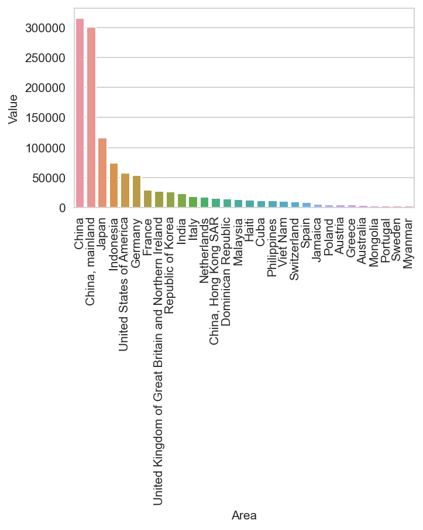
plt.figure(figsize=(5, 3), dpi=150, linewidth=2)
sns.barplot(x=s.index, y='Value', data=s)
plt.xticks(rotation=90)
plt.show()
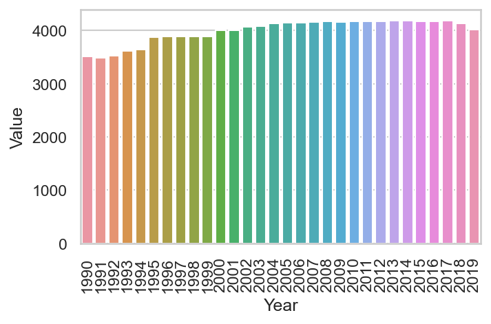
plt.figure(figsize = (20,10))
sns.lineplot(x = "Year", y = "Value", data = df[df["Area"]=="China"])
plt.show()
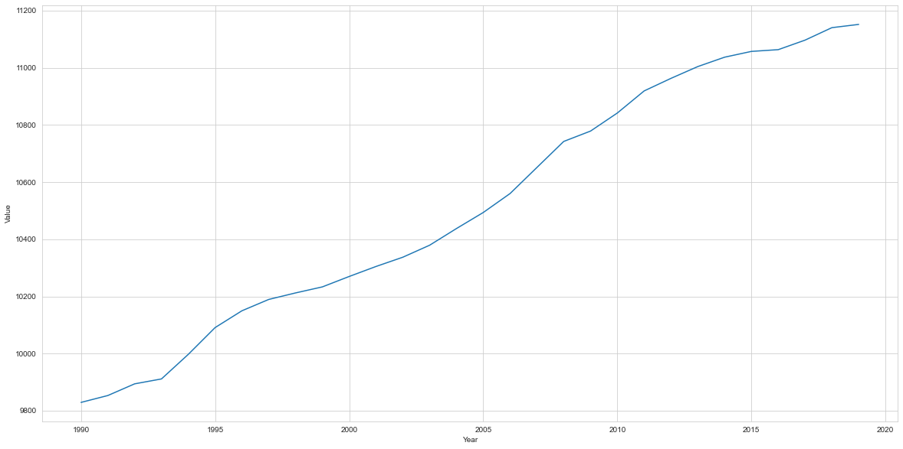
plt.figure(figsize=(20, 10))
sns.lineplot(x="Year", y="Value", data=df[df["Area"] == "Japan"])
plt.show()
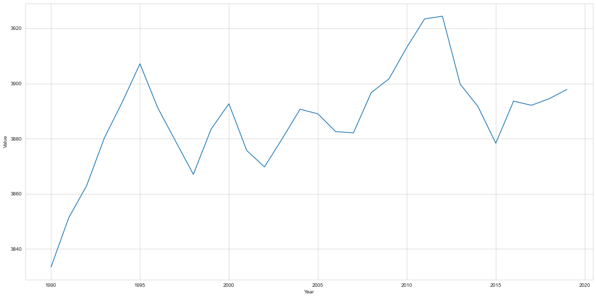
plt.figure(figsize=(20, 10))
sns.lineplot(x="Year", y="Value", data=df[df["Area"] == "China, mainland"])
plt.show()
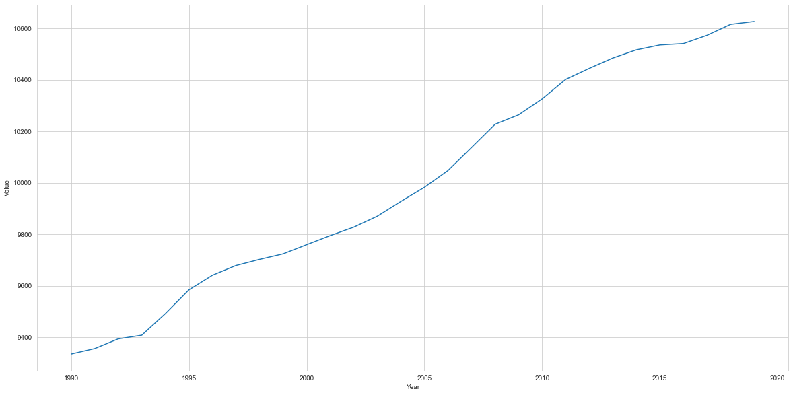
visualization of CO2 emissions over the different countries.
countries = df['Area'].unique()
sns.set_style("whitegrid")
plt.figure(figsize=(15, 15))
for country in countries:
sns.distplot(df[["Area","Value"]])
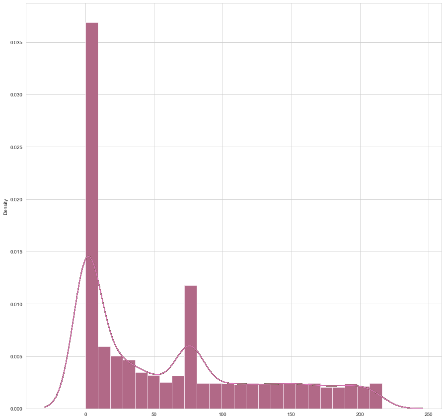
CO2 Emissions from Subcontinent
In this section subcontinent countries will be examined. the list of countries are as follows:
Selecting Subcontinents countries
df_sub = df[df["Area"].isin(["India", "Pakistan", 'Bangladesh'])]
df_sub.head()
Domain Code Domain Area Code (ISO3) Area Element Code Element Item Code Item Year Code Year Unit Value Flag Flag Description 446 GW Waste Disposal BGD Bangladesh 7273 Emissions (CO2) 6990 Incineration 1990 1990 kilotonnes 46.863842 Fc Calculated data 447 GW Waste Disposal BGD Bangladesh 7273 Emissions (CO2) 6990 Incineration 1991 1991 kilotonnes 46.824124 Fc Calculated data 448 GW Waste Disposal BGD Bangladesh 7273 Emissions (CO2) 6990 Incineration 1992 1992 kilotonnes 46.870611 Fc Calculated data 449 GW Waste Disposal BGD Bangladesh 7273 Emissions (CO2) 6990 Incineration 1993 1993 kilotonnes 46.957732 Fc Calculated data 450 GW Waste Disposal BGD Bangladesh 7273 Emissions (CO2) 6990 Incineration 1994 1994 kilotonnes 46.992608 Fc Calculated data
df_sub[df_sub["Area"]=="Bangladesh"].groupby("Year")["Value"].mean().plot(kind="bar")
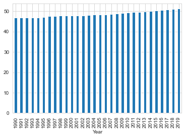
df_sub[df_sub["Area"]=="India"].groupby("Year")["Value"].mean().plot(kind="bar")
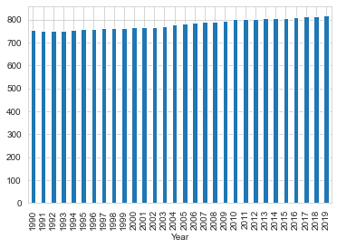
plt.figure(figsize=(20, 10))
sns.lineplot(x="Year", y="Value", data=df_sub[df_sub["Area"] == "India"])
plt.show()
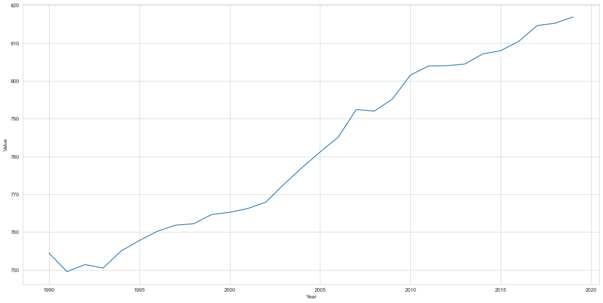
df_sub[df_sub["Area"]=="Pakistan"].groupby("Year")["Value"].mean().plot(kind="bar")
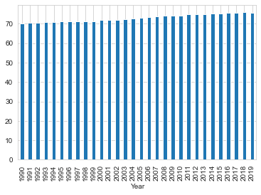
df_sub.groupby(['Area', 'Item'])['Value'].mean(
).unstack().plot(kind='barh', figsize=(15, 10))
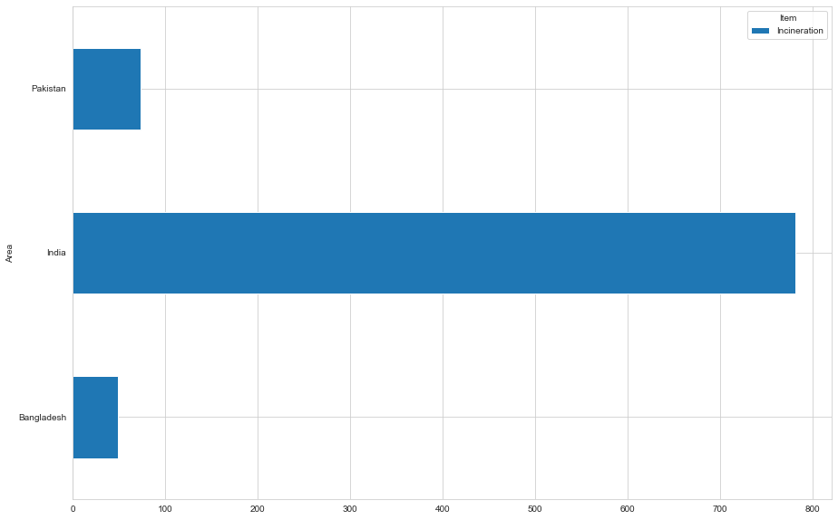
plt.figure(figsize=(26, 8))
sns.lineplot(x="Year", y="Value", data=df_sub)
plt.show()
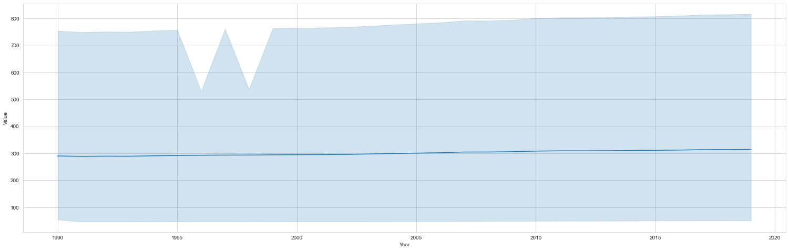
Highest Emission Countries: China 2020, China, mainland 2020, Japan 2013